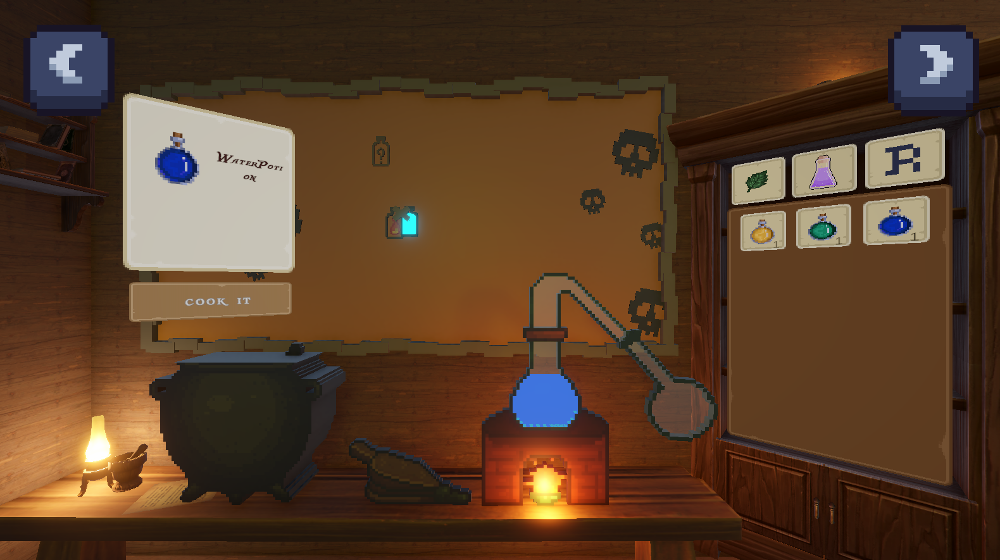
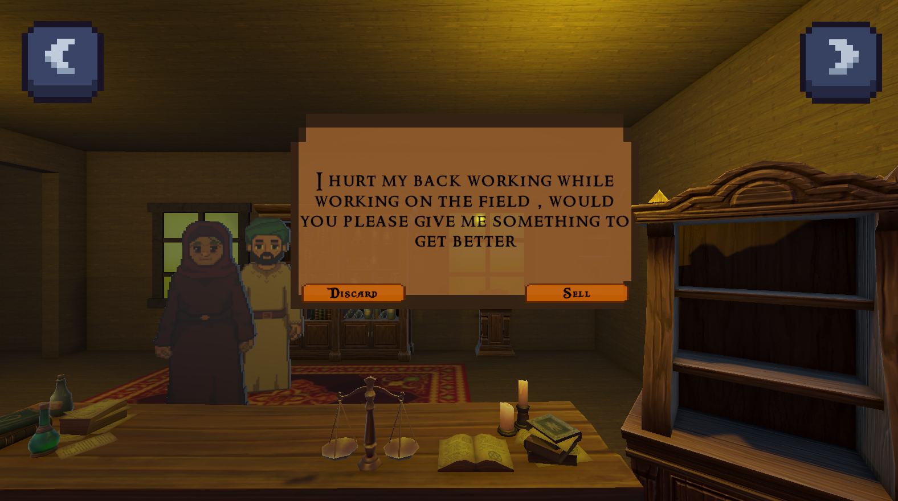

Arabian Shop


i made this game for the GameCraft 2024 game jam , a 5 day game making challenge , and managed to get the first place , I have learned so many things as I got some practical experience with level design and game mechanics.
the game has a movement system that allows the player to move around , spirnt , jump and crouch as well as a grabbing system so that the player can move objects in the world , the game also has a time manipulation mechanic that allows the player to rewind time to solve puzzles .
here's the link to the game